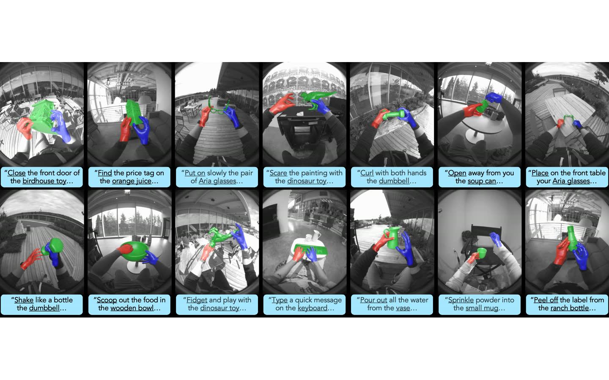
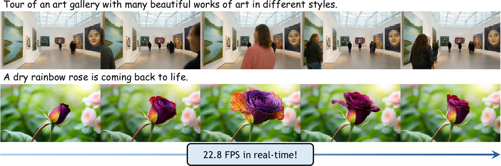
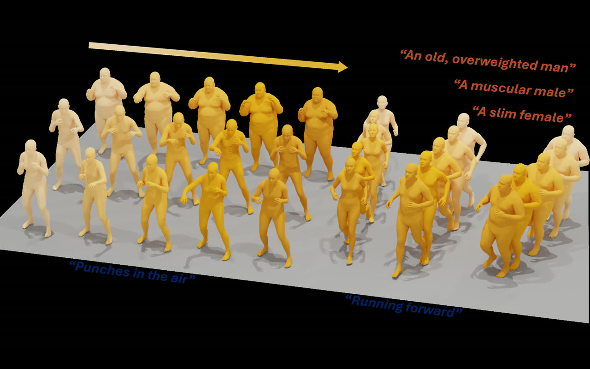

HumanCLAW: Can Vision-Language Models Act Through a Body?
Separating the decision from the motor execution that carries it out makes embodied failure attributable: the model chose wrong, or the body could not do it.
I’m a research scientist at Meta Reality Labs Research, where I work on building robotic foundation models and scaling up egocentric data for human-level dexterity. My background is in multi-modal motion generation and 3D humans. I received my PhD from the University of Wisconsin–Madison, advised by Ümit Ogras and Yin Li, and my BS from the University of Electronic Science and Technology of China (UESTC).
Separating the decision from the motor execution that carries it out makes embodied failure attributable: the model chose wrong, or the body could not do it.

Dexterous manipulation needs contact-rich data from real environments, not a capture dome — this is the rig and the pipeline that produce it.

Streaming is what separates a video model from a world model an agent can act inside — it has to keep up with the agent, in real time.
One pretrained motion prior, prompted rather than retrained, covers behaviors and constraints that normally need a model each.

Body morphology changes how a motion actually looks — generating shape and motion together keeps the two from contradicting each other.
Continuous tokens avoid the quantization jitter of discrete motion codes while leaving the pretrained language model intact.
Knowing whose body it is turns fitting from a guess about shape into a pose problem, which is where the accuracy comes from.
The first 3D-aware GAN to synthesize a full head rather than a frontal face — back of the skull and hair included.
Follow-up to PanoHead: the geometry representation, not the generator, was what capped full-head quality.
Pairs three very different sensing modalities on the same subjects, so cross-modal pose methods have something to train and be measured on.
Crosses the domain gap between 2D stylized portraits and animatable 3D heads, where photoreal face priors do not transfer.
Nothing featured.
mRI: Multi-modal 3D Human Pose Estimation Dataset using mmWave, RGB-D, and Inertial Sensors
PAniC-3D: Stylized Single-view 3D Reconstruction from Portraits of Anime Characters
HumanCLAW: Can Vision-Language Models Act Through a Body?
SHOW3D: Capturing Scenes of 3D Hands and Objects in the Wild
Ms. Forcing: Efficient Streaming Video Generation with Multi-Scale Patchification and Attention
UMO: Unified In-Context Learning Unlocks Motion Foundation Model Priors
IAM: Identity-Aware Human Motion and Shape Joint Generation
LLaMo: Scaling Pretrained Language Models for Unified Motion Understanding and Generation with Continuous Autoregressive Tokens
PHD: Personalized 3D Human Body Fitting with Point Diffusion
PanoHead: Geometry-Aware 3D Full-Head Synthesis in 360°
SphereHead: Stable 3D Full-head Synthesis with Spherical Tri-plane Representation
Nothing here.
Click outlined text to edit it; each paper has ↑ ↓, ★ Lead and Feature buttons. Saved in this browser only — untick Editing to preview.